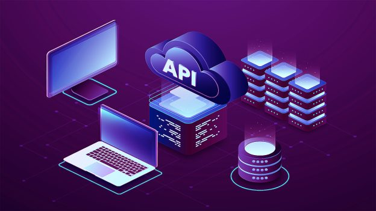
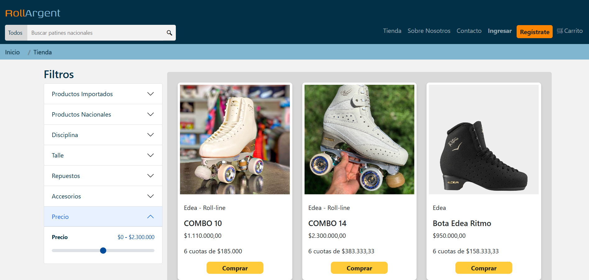
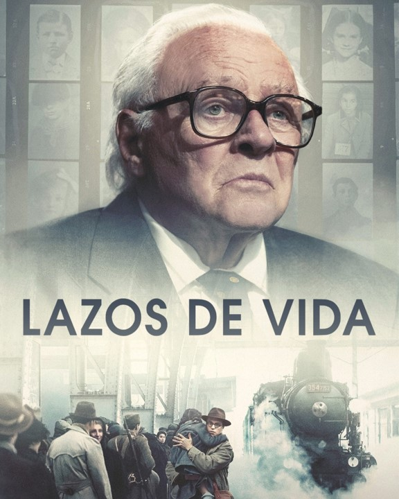

API REST
Desarrollo de una API REST en Java con Spring Boot, implementando operaciones CRUD y persistencia en base de datos.
Futura Técnica en Tecnologías de la Información y Desarrollo de Software
Mi nombre es Ivana Zandoná. Soy estudiante avanzada en Tecnologías de la Información y Desarrollo de Software, con formación académica en desarrollo backend (Java, C#, MySQL) y frontend (HTML, CSS, JavaScript, Bootstrap). Me destaco por mi autonomía y capacidad para trabajar en equipo. Poseo pensamiento lógico y crítico, una sólida capacidad de adaptación y comunicación asertiva. Mi enfoque está orientado hacia el aprendizaje constante y la resolución de problemas. Busco aportar valor en proyectos tecnológicos mientras continúo desarrollándome profesionalmente en un entorno dinámico.

Desarrollo de una API REST en Java con Spring Boot, implementando operaciones CRUD y persistencia en base de datos.

Sitio Web de E-commerce "Roll Argent": Diseño y desarrollo de un sitio web estático para una tienda de patinaje, utilizando HTML, CSS, Bootstrap 5 y un poco de JavaScript. Enfocado en diseño visual, experiencia de usuario y navegación responsive.
Ver imágenes del proyecto| Área / Tecnología | Nivel | Descripción |
|---|---|---|
| Automatización RPA Blue Prism |
Profesional | Experiencia laboral actual en el diseño, desarrollo e implementación de robots de software para la automatización de procesos de negocio. |
| Lenguajes y Desarrollo Web Java, C#, HTML, CSS, JavaScript, SQL |
Intermedio | Desarrollo de lógica backend, maquetado frontend y consultas estructuradas. |
| Bases de Datos MySQL |
Intermedio | Creación de bases, consultas complejas (JOINs y subconsultas), modelado y relaciones de datos. |
| Frameworks y Librerías Hibernate, JPA, Maven, JDBC, ADO.NET, Bootstrap |
Intermedio | Manejo de persistencia de datos (ORM), conexiones a bases y diseño web responsivo. |
| Arquitectura y Metodologías POO, MVC, Arquitectura en capas |
Intermedio | Diseño de software estructurado, buenas prácticas y conocimientos de metodologías ágiles/tradicionales. |
| Herramientas y Entornos Git, VS Code, NetBeans, Visual Studio, Spring Tools |
Intermedio | Control de versiones seguro y manejo de los principales IDEs del mercado. |
| Habilidades Personales (Soft Skills) | Avanzado | Autonomía, trabajo en equipo, pensamiento lógico y crítico, adaptación y comunicación asertiva. |
| Herramientas Complementarias Excel, Word, Canva, CapCut |
Intermedio | Redacción de documentación y edición multimedia. |

Un thriller psicológico de ciencia ficción atrapante. Un grupo de amigos cena durante el paso cercano de un cometa, lo que provoca la ruptura de la realidad y la superposición de universos paralelos. Tras un apagón, descubren que otra casa cercana es una réplica idéntica, desencadenando paranoia, desconfianza y un juego de suplantación entre versiones alternativas de sí mismos.

Una historia profundamente conmovedora basada en hechos reales. Es un drama histórico basado en hechos reales que narra cómo Nicholas Winton, un corredor de bolsa británico, salvó a 669 niños (principalmente judíos) de Praga antes de la Segunda Guerra Mundial. La película alterna entre 1938 y los años 80, destacando la valentía, la humanidad y el impacto duradero de sus acciones.

Un thriller psicológico que narra la investigación de dos agentes federales en 1954 sobre la desaparición de una paciente en un hospital psiquiátrico remoto, sumergiéndose en una trama de paranoia, secretos médicos y traumas personales.